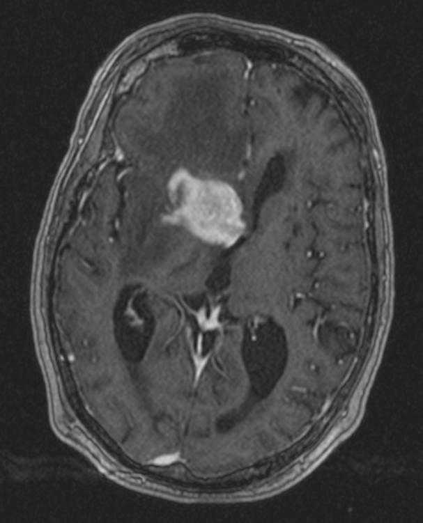

Ficha del catálogo
Linfoma primario del sistema nervioso central
- Sistema
- Nervioso
- Modalidad
- RM
- Región
- Sustancia blanca periventricular, cuerpo calloso y ganglios basales
- Dificultad
- Avanzado
El linfoma primario del sistema nervioso central es una neoplasia linfoide confinada al encéfalo, las meninges, la médula o el ojo, sin enfermedad sistémica. Aparece tanto en pacientes inmunocompetentes como en inmunodeprimidos y se presenta con déficit focal, cambios conductuales o síntomas de hipertensión intracraneal.
Técnica
Resonancia magnética con T1, T2, FLAIR, difusión con mapa de coeficiente aparente y T1 con contraste. La perfusión y la espectroscopía ayudan a diferenciarlo de otros tumores agresivos cuando el patrón no es típico.
Qué observar
- Lesiones en contacto con las superficies ependimarias o con el cuerpo calloso
- Señal baja o intermedia en T2 por alta celularidad
- Restricción marcada a la difusión con coeficiente aparente bajo
- Realce intenso y homogéneo en el paciente inmunocompetente
- Realce en anillo irregular en el paciente inmunodeprimido
- Edema y efecto de masa menores de lo esperado por el tamaño
Hallazgos
Masa o masas de localización profunda y periventricular, con frecuencia en cuerpo calloso, ganglios basales o región periventricular, que muestran señal intermedia o baja en T2 y restricción intensa a la difusión. En el paciente inmunocompetente el realce suele ser sólido y homogéneo, mientras que en el inmunodeprimido predomina el patrón anular heterogéneo con necrosis. La perfusión muestra valores de volumen sanguíneo menos elevados que en el glioma de alto grado.
Perlas
La combinación de señal baja en T2, restricción marcada a la difusión y realce homogéneo en localización periventricular es muy característica y debe hacer evitar los corticoides antes de la biopsia, porque estos fármacos pueden hacer desaparecer el realce y la lesión en pocos días y frustrar el diagnóstico histológico. Un tumor que se desvanece tras corticoides orienta con fuerza a esta entidad.
Diagnóstico diferencial
- Glioblastoma
- Realce grueso e irregular en anillo con necrosis central, perfusión más elevada y menor restricción a la difusión en la porción sólida.
- Toxoplasmosis cerebral
- Lesiones múltiples en anillo con predominio en ganglios basales, sin restricción marcada del componente sólido y en paciente con inmunodepresión avanzada.
- Metástasis
- Localización corticosubcortical, edema desproporcionado y antecedente oncológico conocido.
- Lesión desmielinizante tumefactiva
- Realce en anillo abierto hacia la sustancia gris, menor efecto de masa y evolución favorable con tratamiento inmunomodulador.
Simuladores
- Encefalitis focal con realce y restricción
- Infarto subagudo con realce y difusión alterada
- Cambios posterapéuticos tras radioterapia
Por modalidad
- TC
- Puede mostrar lesiones espontáneamente hiperdensas por su alta celularidad, dato que ya sugiere el diagnóstico.
- RM
- Define el patrón de señal, la restricción y el realce, y sirve para valorar la respuesta al tratamiento.
Protocolo
Encéfalo con T1, T2, FLAIR, difusión con mapa cuantitativo, susceptibilidad y T1 con contraste, ampliado con perfusión si se plantea duda con glioma; conviene estudiar también el neuroeje y valorar la afectación ocular ante sospecha clínica.
Clasificación
Errores frecuentes
- Iniciar corticoides antes de la biopsia y anular los hallazgos de imagen
- Interpretar la señal baja en T2 como calcificación o como artefacto
- No incluir difusión, con lo que se pierde el rasgo más orientador

linfoma primario sistema nervioso central restricción a la difusión realce homogéneo periventricular inmunodepresión